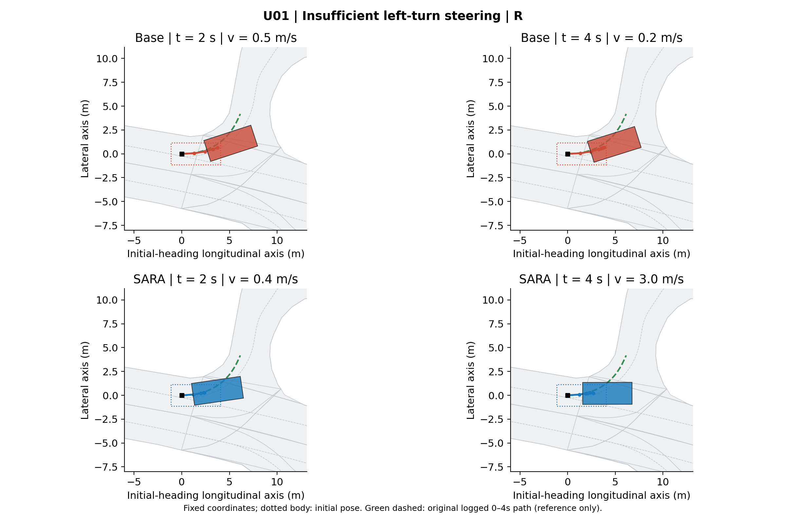
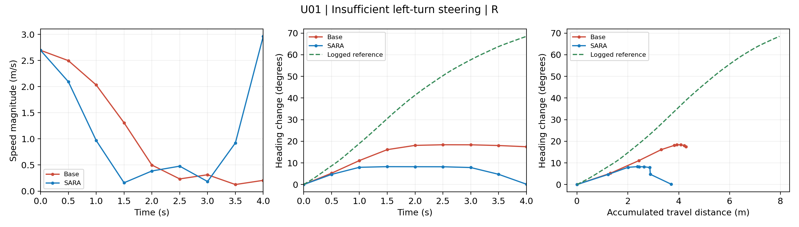
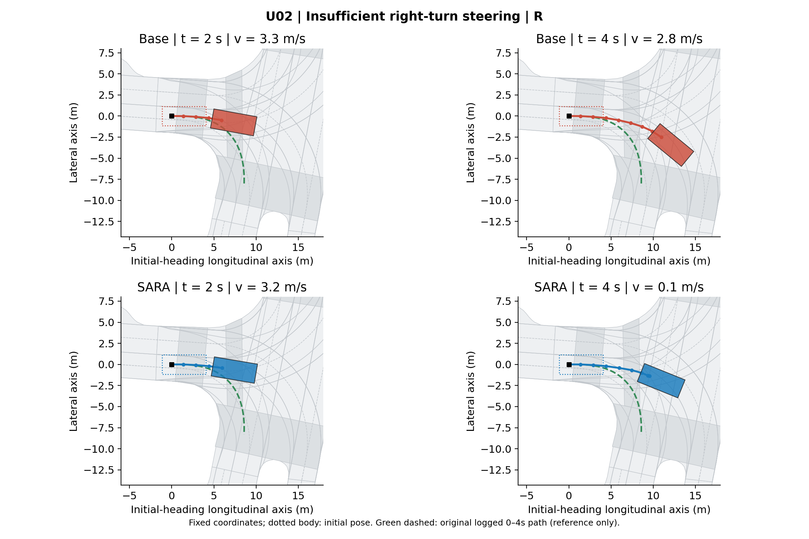
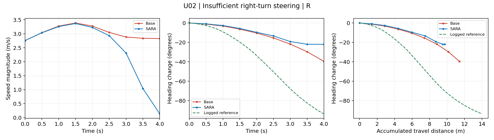

优先U01，U02较弱。绿色虚线是原始人类0–4秒记录，仅作参照；Base也没有完成完整转弯，不外推四秒之后结果。
优先看这一例。原始记录是左转，Base 四秒内车头左转约17.5°，SARA 仅约0.2°。两边行程约4.3m和3.7m；在相同行程约3.7m处比较，车头方向仍相差约17.5°，所以区别不只是前进速度。Base 也没有在四秒内完成整个左转，不能写成 Base 已完整成功通过。


弱备选。Base 右转约39.6°，SARA 约22.0°，但相同行程处只差约5.3°，相当部分差异与行程长短有关。可看作右转不足的参考，不建议作为证明独立转向缺陷的主例。

